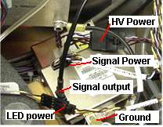

Remove the two luminometer mounting bolts and then remove the luminometer assembly from the analytical module.
Note: The bolt heads are visible through the two holes in the hard foam insulation on the front of the luminometer.
Install the new luminometer assembly onto the analytical module and align the mounting bolts to the mounting holes in the wash carousel housing.
Tighten the luminometer mounting bolts evenly until the assembly is securely attached.
Slide the analytical module into the instrument.
Connect the ground strap to the lower tab of the spade connector located on the side of the luminometer.
Note: The ground strap is bolted to the analytical module mounting rail.
Connect the luminometer cable harness to the luminometer and to the LED reference.
LED power
HV power
Signal
Ground
Figure 7: Original Luminometer Connections

Figure 8: Shielded Luminometer Connections
Note: The shielded luminometer has a D-sub connector on top. A new luminometer wire harness 973050 must be ordered if replacing an older luminometer with a shielded luminometer.
Confirm all connections (luminometer and analytical module), then power on the instrument.
Adjust the new luminometer and verify the instrument and luminometer meet specification.